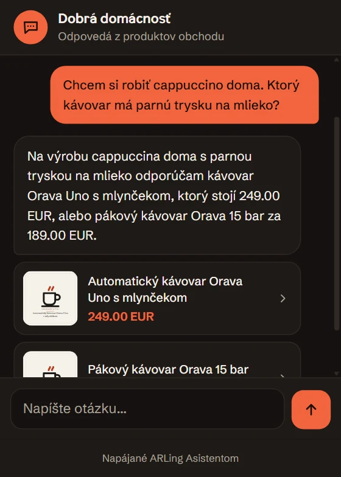
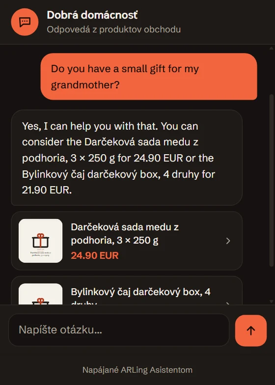
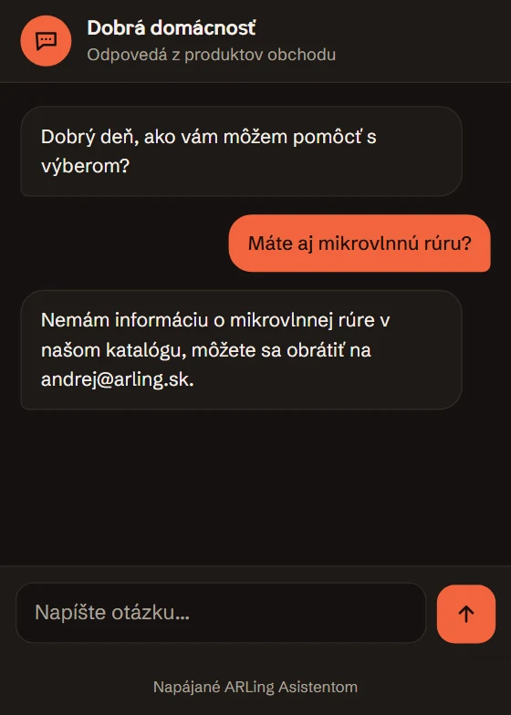

Živá ukážka ARLing Asistenta
Asistent pre váš e-shop je pripravený
Odpovedá z verejného zoznamu produktov vášho obchodu. Nič, čo napíšete, sa neukladá.
Zadarmo do 100 rozhovorov mesačne. Potom od 19 € mesačne. Bez karty, zrušíte kedykoľvek.
Feed a e-mail, potom vložíte riadok kódu.
- WooCommerce · Shoptet · Upgates · Shopify
- SK · CS · EN · DE
Načítavam asistenta…
Asistenta sa teraz nepodarilo načítať.

Pri pripravených otázkach ukazujeme vopred skontrolované, uložené odpovede. Vlastnú otázku spracuje asistent naživo.
01
Na vašom webe za 10 minút
Produkty si Asistent berie z feedu, ktorý váš e-shop už má, a sám ich z neho obnovuje.
-
pár minút
Feed a e-mail
Vložíte adresu produktového feedu a e-mail. Heureka a Zboží.cz XML, Google Nákupy, Shopify, WooCommerce aj bežný XML, najviac 5 000 produktov.
-
jeden riadok
Jeden riadok kódu
Vložíte ho pred
</body>alebo ako HTML kód v administrácii Shoptetu či Upgates. Na WooCommerce stačí doplnok z wordpress.org.<script src="https://arling-asistent.arling.workers.dev/widget.js" data-tenant="…" data-lang="auto" defer></script> -
hneď
Hotovo
Okienko vpravo dole odpovedá vašimi produktmi, s cenou a odkazom na kartu.
0 € do 100 rozhovorov mesačne
19 € mesačne do 1 000 · 39 € do 3 000
02
Čo uvidia zákazníci a čo vy
Zákazník
Okienko v rohu stránky. Odpoveď príde v jazyku, v ktorom píše, a pod ňou karty najviac troch vašich produktov s cenou a odkazom. Keď tovar nemáte, povie to.
Vy
Stránku účtu s počtom rozhovorov v mesiaci, počtom produktov v indexe, posledným obnovením feedu a plánom. Plán zmeníte cez Stripe, zrušíte kedykoľvek.
E-mail
Na e-mail príde len overovací kód. Riadok kódu uvidíte hneď po vytvorení na obrazovke a návod na zapojenie vám pošleme, keď napíšete na podpora@arling.sk.


Skutočné odpovede ukážkového obchodu Dobrá domácnosť z 28. 9. 2026, zobrazené v súčasnom okne Asistenta.
03
Čo je dobré vedieť
Odpovedá z verejného feedu
Pozná len produkty z verejného zoznamu vášho obchodu. Názov, cena a odkaz na karte idú priamo z feedu, nie z textu, ktorý napíše AI.
Nič sa neukladá
Obsah rozhovoru sa nikde neukladá, ani u nás, ani v databáze. Počítame len, koľko rozhovorov a kliknutí na produkt sa za deň udialo.
Môže sa pomýliť
Na vlastné otázky odpovedá AI, pri opakovaní sa odpovede môžu trochu líšiť a môže sa pomýliť aj vo výbere produktu. Pri otázke „do 30 €“ môže ponúknuť aj drahší. Pripravené otázky v tejto ukážke majú vopred skontrolované, uložené odpovede.
Zapnite Asistenta na svojom e-shope
Vlastný účet s vaším feedom. Zadarmo do 100 rozhovorov mesačne, bez platobnej karty.
Zapnúť Asistenta zadarmoOtvorí formulár: adresa feedu a e-mail. Riadok kódu dostanete hneď potom.
Andrej Róbert Lauko
ARLing s. r. o., Bratislava. Radi ho zapneme spolu s vami.